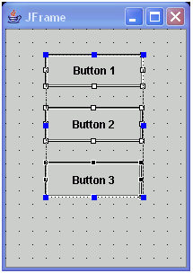

When you set the layout property for a component to null, you can use the Customize Layout window to align components based on their boundaries.
With layout set to null, each component is independently placed and sized on the user interface based on its bounds. To avoid the tedious and error-prone task of individually updating each component's bounds, you can use the visual editor to align and adjust the sizes and placement of components based on relationships.
- Align components based on edges
- Align components based on center points
- Make components the same width and height
- Distribute components evenly, both vertically and horizontally, across a given space
To align, resize, and distribute components in null layout:
- Do one of the following steps to open the Customize Layout window:
- Right-click and select Customize Layout from the pop-up menu.
- Click Customize Layout
 in the toolbar.
in the toolbar.
For example, you can select three JButton components and specify that they should be the same width and aligned with each other on the left bound. The last selected JButton component is used as the anchor, or control, for the other two buttons. The Align left action aligns the JButton components with the left edge of the last selected JButton component, and the Match width action makes the selected JButton components the same width as the control JButton component.
The alignment buttons on the Customize Layout window are only enabled if the following conditions are true:
- Two or more components are selected, and the parent container is not using a layout manager (layout is set to null).
- The components have no parent and have been placed on the Design view directly.
In addition to aligning components and matching width and height, you can distribute components. When components are distributed, their positions are changed so that they are evenly spaced within a bounding box defined by their parent container. For example, before clicking the Distribute vertical button , three buttons have uneven spacing, as shown in the following image:

After clicking Distribute vertical, the components are spaced evenly, as shown in the following image:

Notice that the three buttons are distributed within the height of the parent (the frame's top and bottom edge).
For more control over the area used for the distribution, you can enable the distribution box by clicking the Show distribute box button. When you click this button, a box is drawn around the area of all the selected components. You can move and resize this box using its handles. When you use a distribution box and the box is active, the distribution box defines the area that is used to reposition the controls. Without a distribution box, the parent container defines the area used for distribution. The following image shows a distribution box:

You can move and resize the distribution box, as the following image shows:

If you do a vertical distribution while using the distribution box, the distribution takes place within the boundaries of the box, rather than the parent container, as is shown in the following image:
